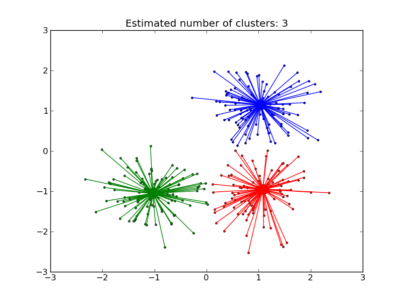

Demo of affinity propagation clustering algorithm¶
Reference: Brendan J. Frey and Delbert Dueck, “Clustering by Passing Messages Between Data Points”, Science Feb. 2007
Python source code: plot_affinity_propagation.py
print __doc__
import numpy as np
from scikits.learn.cluster import AffinityPropagation
################################################################################
# Generate sample data
################################################################################
np.random.seed(0)
n_points_per_cluster = 100
n_clusters = 3
n_points = n_points_per_cluster*n_clusters
means = np.array([[1,1],[-1,-1],[1,-1]])
std = .5
X = np.empty((0, 2))
for i in range(n_clusters):
X = np.r_[X, means[i] + std * np.random.randn(n_points_per_cluster, 2)]
################################################################################
# Compute similarities
################################################################################
X_norms = np.sum(X*X, axis=1)
S = - X_norms[:,np.newaxis] - X_norms[np.newaxis,:] + 2 * np.dot(X, X.T)
p = 10*np.median(S)
################################################################################
# Compute Affinity Propagation
################################################################################
af = AffinityPropagation()
af.fit(S, p)
cluster_centers_indices = af.cluster_centers_indices_
labels = af.labels_
n_clusters_ = len(cluster_centers_indices)
print 'Estimated number of clusters: %d' % n_clusters_
################################################################################
# Plot result
################################################################################
import pylab as pl
from itertools import cycle
pl.close('all')
pl.figure(1)
pl.clf()
colors = cycle('bgrcmykbgrcmykbgrcmykbgrcmyk')
for k, col in zip(range(n_clusters_), colors):
class_members = labels == k
cluster_center = X[cluster_centers_indices[k]]
pl.plot(X[class_members,0], X[class_members,1], col+'.')
pl.plot(cluster_center[0], cluster_center[1], 'o', markerfacecolor=col,
markeredgecolor='k', markersize=14)
for x in X[class_members]:
pl.plot([cluster_center[0], x[0]], [cluster_center[1], x[1]], col)
pl.title('Estimated number of clusters: %d' % n_clusters_)
pl.show()